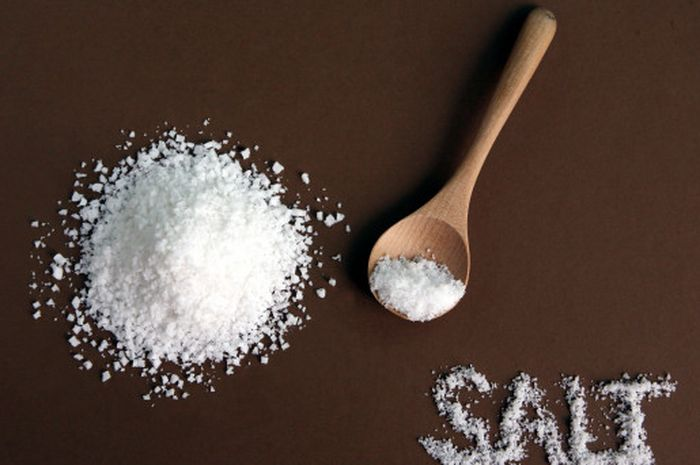

Gula
Gula merupakan salah satu golongan karbohidrat yang rasanya manis. Hal ini juga merupakan bahan bakar yang cepat dan mudah untuk digunakan tubuh. Karbohodrat, terutama polisakarida, adalah salah satu dari empat kelompok utama biomolekul.
Yang lainnya adalah protein, asam amino, dan asam nukleat.
Manfaat Gula :
- Meningkatkan fungsi otak
Jika pikiran kita sedang kacau tidak bisa berfikir tentang pekerjaan, biasanya hal ini telah disebabkan karena kita kurang mengkonsumsi kandungan ini. Oleh karena itu konsumsi lah kandungan ini supaya otak kita kembali berfungsi
dengan baik dan pekerjaan kita kembali seperti semula.
- Menyembuhkan depresi
Manfaat lainnya dari gula ini bisa membantu meningkatkan fungsi dari otak yang nantinya bisa membuat pikiran menjadi lebih tenang.
- Sebagai sumber nutrisi dan energi untuk metabolisme
Gula adalah nutrisi utama. Itu adalah salah satu kebutuhan makanan utama dari banyak organisme hidup karena mereka menyediakan sumber energi kimia bagi tubuh. Gula sederhana, karena bentuknya yang mudah dicerna, memberikan organisme
suatu senyawa yang darinya bahan bakar energi dapat dengan mudah diperoleh. Sebaliknya, karbohidrat kompleks membutuhkan waktu lebih lama untuk dicerna dan dimetabolisme.
Bahaya Kelebihan Gula :
- Meningkatkan risiko obesitas
Konsumsi gula berlebihan berkaitan dengan peningkatan lemak visceral yakni lemak perut bagian dalam yang berhubungan dengan diabetes dan penyakit jantung
- Menyebabkan gagal ginjal
Ginjal memainkan peran penting dalam menyaring gula darah di dalam tubuh. Begitu gula darah mencapai kadar yang tinggi (akibat terlalu banyak mengonsumsi makanan manis), ginjal akan membiarkan gula tersebut masuk ke urine. Jika
keadaan ini terus berlanjut, gagal ginjal tak bisa dihindari lagi.
- Menurunkan fungsi kognitif
Peningkatan glukosa dalam darah dapat berbahaya bagi otak yang dapat mengakibatkan fungsi kognitif lambat, menurunkan daya ingat dan perhatian. Bahkan, beberapa penelitian juga menunjukkan konsumsi gula yang berlebihan menyebabkan
peradangan pada otak yang membuatnya kesulitan dalam mengingat sesuatu. Namun, kabar baiknya kerusakan memori atau daya ingat yang disebabkan oleh konsumsi gula dapat dibalik dengan mengikuti diet rendah gula dan rendah glycemic.
Garam

Garam sejatinya diperlukan tubuh untuk mengimbangkan kadar cairan dalam tubuh. Meski garam bisa membawa efek negatif jika dikonsumsi terlalu banyak, nyatanya tubuh manusia juga membutuhkan garam.
Manfaat Garam :
- Melancarkan metabolisme
Manfaat garam untuk kesehatan yaitu bisa membantu melancarkan metabolisme dalam tubuh. Metabolisme yang baik akan meningkatkan fungsi sistem dalam tubuh. Garam dapat membantu menyerap air dalam tubuh, hal itu disebabkan oleh mineral
dan nutrisi pada garam yang dengan mudahnya dapat menyerap di dalam darah.
- Meringankan bronkitis dan masalah pernapasan lainnya
Garam berguna untuk menyerap ion berbahaya pada udara yang di hirup dan membantu melawan ion berbahaya agar tidak terserap ke dalam tubuh. Maka itu, tidak jarang garam bisa meringankan sakit asma, bronkitis, dan sistem pernapasan
lainnya.
- Menjaga kesehatan mulut
Manfaat garam untuk kesehatan ini bisa membasmi bakteri yang menyebabkan infeksi di sekitar mulut anda. Gusi yang luka, atau ngilu pada gigi bisa diredakan sakitnya dengan hanya berkumur-kumur dengan larutan garam. Tindakan ini
mencegah pembengkakan dan menenangkan sakit pada gusi.
Bahaya Kelebihan Garam :
- Hipertensi
Hipertensi atau tekanan darah tinggi adalah dampak negatif yang paling umum akibat konsumsi garam berlebih. Semakin banyak asupan garam ke dalam tubuh maka semakin banyak pula asupan natrium ke tubuh. Natrium terlalu banyak dapat
menyebabkan penimbunan di area dinding pembuluh darah sehingga menyebabkan penyempitan pembuluh darah. Saat pembuluh darah mengalami penyempitan, jantung akan bekerja lebih ekstra agar darah bisa dialirkan dengan lancar ke
seluruh bagian tubuh. Dengan kata lain, asupan garam berlebih dapat memicu tekanan darah tinggi.
- Permasalahan pada rambut
Asupan garam berlebih dapat memicu terhambatnya aliran darah karena pembuluh dara mengalami penyempitan. Kondisi semacam itu akan menyebabkan aliran darah, termasuk ke bagian kepala mengahalami hambatan. Akibatnya, rambut di kepala
rentan terhadap kerontokan dan lebih mudah beruban karena nutrisi penting yang dibutuhkan untuk pertumbuhan dan juga kesehatan rambut tidak dapat terpenuhi secara optimal.
- Hipernatremia
Hipernatremia terjadi ketika tubuh kehilangan banyak cairan atau terlalu banyak mendapatkan asupan natrium, salah satunya bisa akibat makan garam dalam jumlah terlalu banyak. Akibatnya, cairan tubuh menjadi tidak seimbang
Saat sodium di darah menumpuk, akan terjadi gangguan metabolisme di tubuh yang bisa berujung pada penumpukan cairan di organ tubuh, termasuk otak. Hal ini bisa menyebabkan kejang, koma, bahkan berujung kematina.
Lemak

Selain protein dan karbohidrat, lemak merupakan salah satu jenis makronutrisi yang dibutuhkan oleh tubuh. Ketiga jenis nutrisi ini dibutuhkan dalam jumlah yang lebih besar dibandingkan jenis nutrisi lain, seperti vitamin dan mineral.
Namun, tidak semua jenis lemak dapat memberikan beragam kebaikan bagi tubuh. Jenis lemak yang baik untuk kesehatan adalah lemak sehat atau lemak tak jenuh, misalnya asam lemak omega-3.
Manfaat lemak :
- Membantu penyerapan vitamin
Vitamin A, vitamin D, vitamin E, dan vitamin K merupakan jeins vitamin yang larut dalam lemak. Oleh karena itu, agar keempat vitamin ini dapat diserap oleh tubuh dengan lebih baik, kita perlu mengonsumsi makanan yang mengandung
lemak secukupnya
- Menyehatkan kulit dan rambut
Lemak juga berperan dalam menjaga kesehatan kulit dan rambut, karena lemak dibutuhkan untuk memproduksi sebum atau minyak alami tubuh untuk menjaga kelembapan kulit dan rambut.
beberapa penelitian bahkan menyebutkan bahwa lemak baik, seperti asam lemak omega-3 dan omega-6, turut berperan dalam mendukung proses penyembuhan luka, merangsang pertumbuhan rambut, serta mencegah dan mengurangi kerontokan.
- Menjaga tubuh tetap hangat
Lemak yang tidak digunakan oleh tubuh akan disimpan dalam bentuk jaringan lemak. Jaringan ini berfungsi sebagai isolator sehingga suhu tubuh lebih mudah terkendali. Dengan adanya jaringan lemak yang cukup, maka tubuh akan tetap
hangat.
Bahaya Kelebihan Lemak
- Meningkatkan resiko kanker
Pola makan yang buruk seperti terlalu banyak mengonsumsi lemak dan tidak mengonsumsi makanan kaya serta dengan baik akan memicu tumbuhnya sel kanker di berbagai organ tubuh. Beberapa jenis kanker yang paling terjadi adalah kanker
usus besar, kandung empedu, ginjal dan berbagai kanker yang menyerang organ reproduksi.
- Sembelit
Lemak membutuhkan waktu yang lebih lama untuk dikonsumsi sehingga terkadang organ lambung tidak bisa kosong sepenuhnya. Penyakit yang paling sering terjadi adalah sembelit. Sembelit menjadi salah satu pertanda bahwa perut dan sistem
pencernaan tidak bisa bekerja dengan baik.
- Kolesterol Tinggi
Konsumsi berbagai jenis lemak bisa meningkatkan kandungan kolesterol dalam tubuh. Kolesterol yang tinggi bisa menyebabkan berbagai masalah seperti kerusakan arteri, penumpukan plak pada pembuluh darah, penyempitan pembuluh darah
dan berbagai jenis resiko penyakit jantung. Bahkan kolesterol tinggi juga bisa menyebabkan tekanan darah tinggi yang apabila terus terjadi maka bisa menyebabkan komplikasi jantung, penyakit ginjal dan gejala stroke.